Biomedical Engineering · Boston University · Class of 2029
Thana (Kenny) Teeraphantuvat
I work with materials and light: biocomposites, gold nanorods and optical sensors. Now I’m pointing that at devices worn on the body.
In progress · Fall 2026
Wearable ECG + PPG band for pulse arrival time
My grandmother’s stroke is why I care about monitoring. After a stroke, heart rhythm and blood pressure get checked constantly, and both leave signals at the skin. This band records an electrical signal (ECG) and an optical one (PPG) at the same time. The delay between them, the pulse arrival time, tracks how fast the pressure wave travels, which is one route to cuff-less blood-pressure estimates.
The goal is a validated measurement, not a gadget. Heart rate from the band is compared against a commercial watch using Bland–Altman agreement analysis.
SoftwareFirmware and a Python live-plot logger written
AnalysisBand-pass filtering, R-peak and pulse-foot detection, PAT, HRV (RMSSD)
NextBreadboard build, rest and post-exercise sessions, agreement vs. watch
▸ 01
Planned wiring. Photos of the real build replace this once it’s on the bench.
Schematic, not recorded data. Real traces go here after the first session.
Research
Materials → devices
▸ 02
Biomaterials · Chiang Mai University
Mycelium biocomposites to replace polystyrene
Developed biodegradable fungal mycelium composites as a replacement for expanded polystyrene packaging, covering fungal culture, substrate prep, growth cycles and mechanical testing. I screened fungal species against agro-industrial waste substrates and linked each formulation to its compressive and flexural strength.
I took the material further as MycoTech Packaging, my Conrad Challenge venture: protective packaging grown from mycelium on corn husk and paper waste.
May 2023 – Mar 2025 · team of 5 postdocs · 5 journal articles and 1 conference paper, 2 as first author · ICAN Gold Medal and Best Young Inventor Award · Conrad Challenge finalist
From fungal culture to tested composite: lab photos
Inoculating spawn in the flow hoodScreening fungal strainsSawdust substrates (conference paper)Mechanical testingMycoTech packaging prototypesPresenting at ICERD 2024
▸ 03
Biocomposites · Chulalongkorn University
Macadamia-shell composite filament, from farm waste to hotel key fobs
I developed a 3D-printing filament from macadamia shell waste. I optimized the ratio of shell powder to PLA, compounded it into pellets, and drew it into filament on a twin-screw extruder line, then checked particle dispersion under SEM with a postdoctoral researcher and professor.
The client was the Doi Tung Development Project, the royal initiative of the Mae Fah Luang Foundation under Royal Patronage, which turned opium-growing hillsides in northern Thailand into coffee and macadamia farms. Its own macadamia shell waste went into the filament, and the DOITUNG lettering on the hotel room key fobs is printed in it.
Materials Researcher · May 2024 – Mar 2025, Jun 2026 – present
CompoundingTwin-screw extrusionSEMFDM printing
Process photos
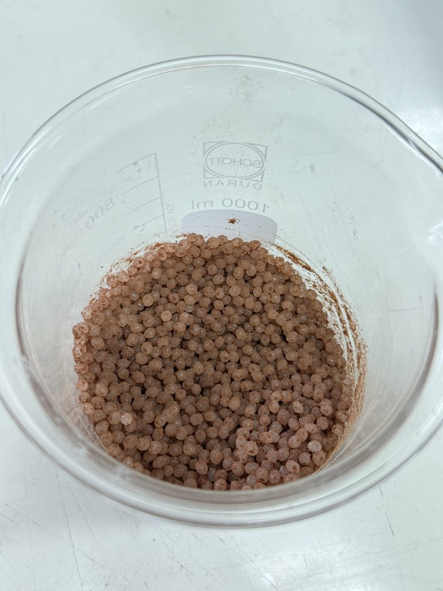
1. Compounded pellets
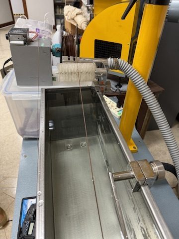
2. Twin-screw extrusion line
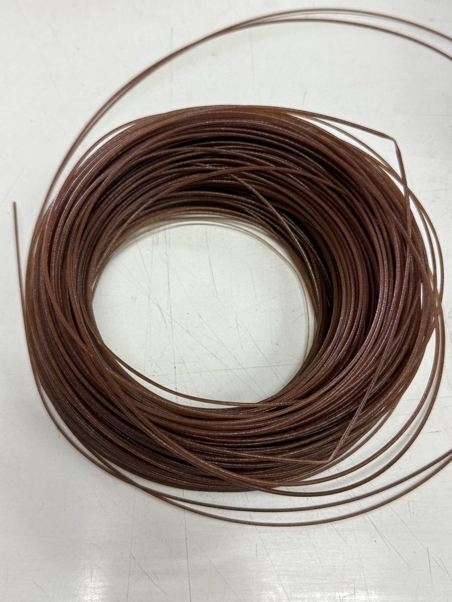
3. Finished filament
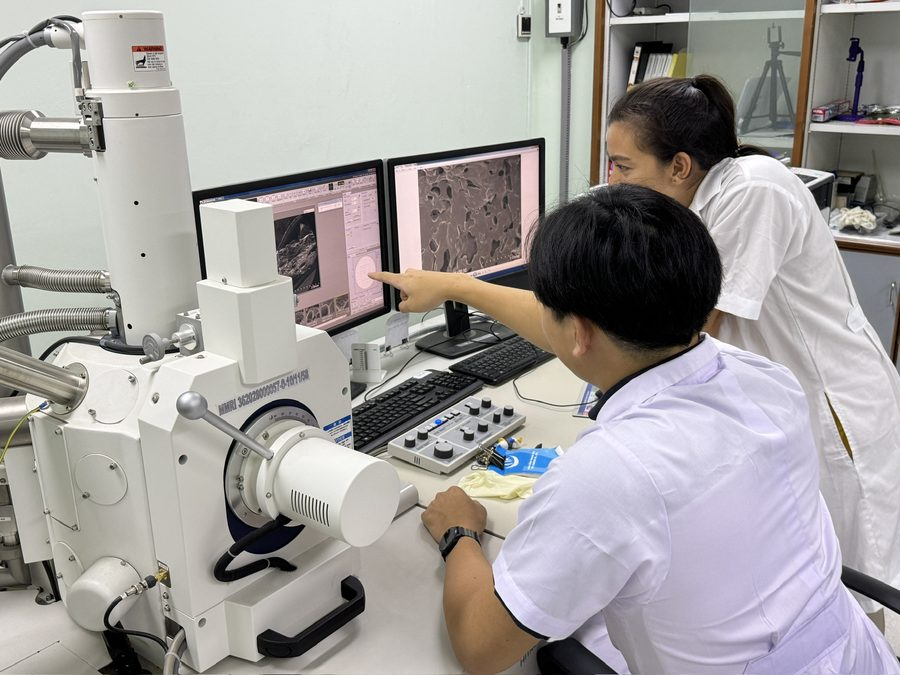
4. SEM of the composite
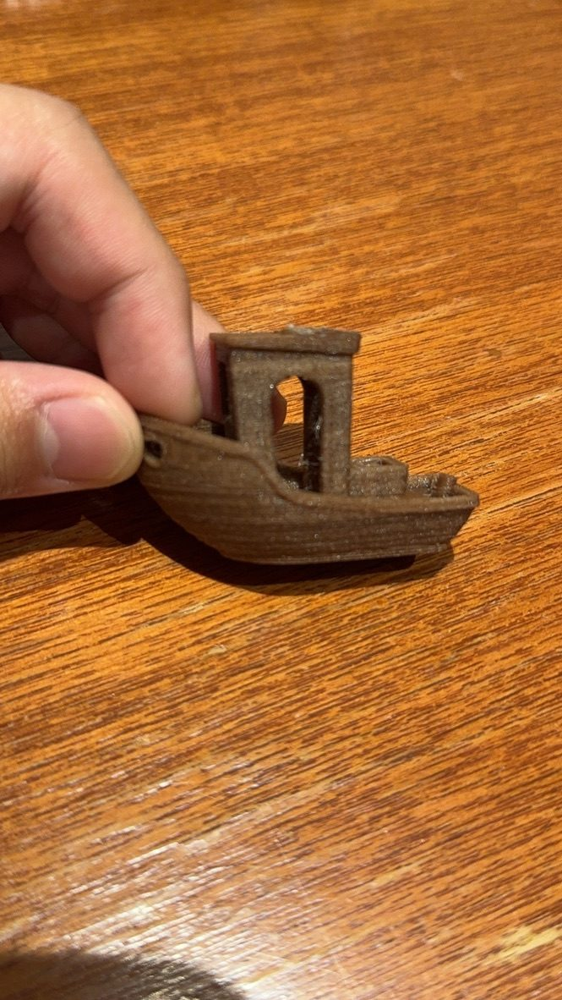
5. Benchy print test
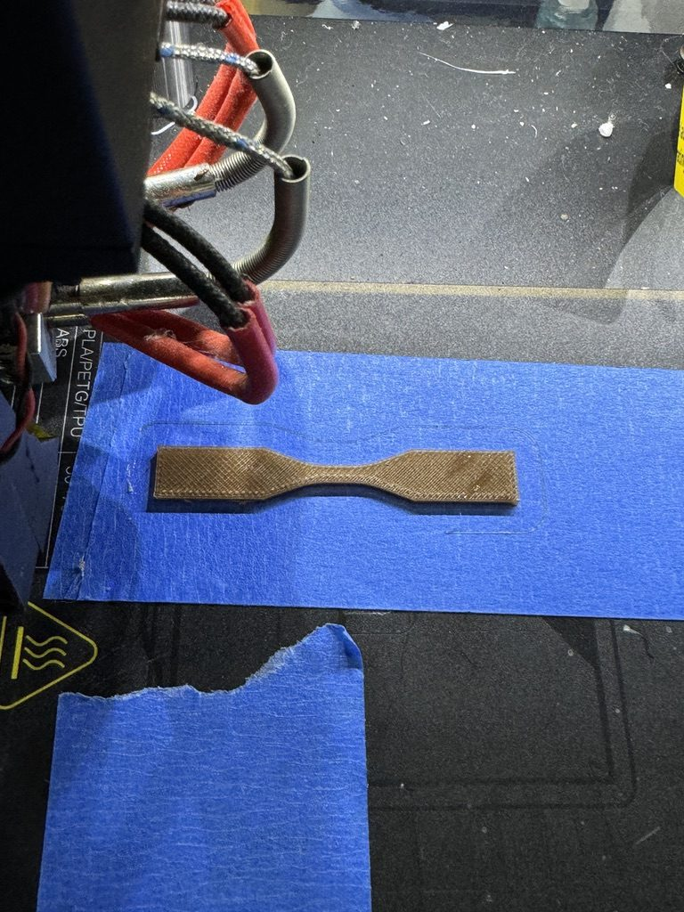
6. Printed tensile specimen
▸ 04
Nanomaterials · BU Yang Lab
Gold nanorods for photoacoustic retinal stimulation
I synthesize and surface-modify gold nanorods (PEGylation, chitosan coating), tuning their plasmon resonance near 1030 nm for photoacoustic stimulation of retinal tissue. I characterize them with UV-Vis spectroscopy and oscilloscope-based photoacoustic measurement, and log batch conditions to make synthesis more reproducible.
The lab is developing the nanorods into an eye drop for retinal disease, so I also build tools for the animal work. My current one is a 3D-printed head holder that positions a rat for optical coherence tomography (OCT) of the retina, iris and cornea. The rat lies on its side, and hand-cranked, self-locking worm gears roll the head ±90° and tilt it −10° to +30° to line the eye up with the beam. The first print went together in October 2026; the second revision fixes what it taught me.
Pictured: UV-Vis spectrum of one batch. The longitudinal peak lands at 1041 nm, 11 nm from the 1030 nm target.
±90° (v1 was ±45°), 200° gear arc on a Ø34 hollow journal
Tilt
−10° to +30° on a Ø12 press-fit pivot pin, engraved scale
Drive
TR12×3 worms on 60-tooth-equivalent gear segments; 6° per crank turn
Lock
16-notch ratchet wheel on each worm shaft with a snap-in printed pawl: ⅜° per click, press the tab to release
Nose cone
Ø27 pass-through in the cradle's nose plate, inside the roll bearing
Mounting
6 × 6 in base, counterbored ¼-20 holes on a ½ in pattern
Material
PLA, snap-fit and press-fit parts; only hardware is ¼-20 bolts
Worms are tilted by their lead angle (≈5.2°) so they mesh with straight-cut teeth that print cleanly; 45° cones on the thread shoulders let them print standing up with no support.
v1 lesson: the cradle hung off a Ø8 stub axle and the frame off a Ø6 pin, and both rocked. v2 replaces them with a Ø34 ring bearing (the nose cone passes through its middle) and a Ø12 pin pressed into the frame.
Ran interference checks across the full tilt and ±95° roll sweep; only the intended worm–gear contact remains.
Velcro strap slots on the body rest and cradle hold the rat; the cradle is a straight U-trough sized from the lab's existing saddle.
Flipping the rat switches eyes. v1 printed on the lab's Bambu A1 mini; v2 cradle, frame, tower and locks are printing now.
Course projects
Sensors → enclosures
▸ 05
Embedded · EK 210
Touchless waste bin
A hands-free bin: an HC-SR04 ultrasonic sensor spots a hand within 50 cm, and a 35 kg·cm waterproof servo swings the lid open, holds it for 5 seconds, then closes it. I owned the CAD model and the servo mount in Onshape, and tuned the distance threshold and debounce timing to stop false triggers.
EK 210 Intro to Engineering Design · May – Jun 2026 · with Guy Margalit and Mohammed Sunbul
Onshape3D printingArduinoUltrasonic sensingServo
Design details
Lid assembly in OnshapeCircuit diagram
Trigger distance
< 50 cm, average of 3 readings
Lid cycle
Open 5 s, then 3 s cooldown
Actuator
DS3235 digital servo, 35 kg·cm, waterproof
Power
8× AA pack, ≈ 42 h estimated at 60 mA idle
Bill of materials
$105.27 (target under $200)
Chose sensor, actuator and power from a function–means chart, then ranked goals with a pairwise comparison. No-touch hygiene came first, cost last.
Wiring soldered and heat-shrunk, routed through channels designed into the printed housing.
Next steps from our evaluation: rechargeable pack, better splash-proofing, long-run cycle testing.
▸ 06
Embedded · EK 131
Room-temperature monitor
I built this to watch the temperature where I store my film. A TMP36 sensor feeds an Arduino Uno, which shows °C and °F on an I2C LCD. If the room leaves 70–80 °F, a red LED flashes and a buzzer sounds. It runs from a 9 V battery in a holder I designed in Onshape and 3D-printed, or from USB.
EK 131 · Boston University · solo build
ArduinoSolderingOnshape3D printing
Design details
Enclosure assembly in OnshapeWiring diagram
Sensor
TMP36, −40 to 125 °C
Alarm band
Outside 70–80 °F: red LED and 1 kHz buzzer
LED currents
Red 13.6 mA (220 Ω) · green 3 mA (1 kΩ)
Power
9 V battery, 80 mA draw, ≈ 6 h runtime
Measured every part with calipers and drew dimensioned sketches before laying out the box.
Prototyped on a breadboard, then soldered 22 AWG solid-core wire with heat shrink, wire nuts for shared 5 V and ground, and spade connectors to the switch.
Sized the LED resistors with KVL: the red alarm LED gets the smaller resistor so it is brighter.
Assistive devices
Designed for real hands
▸ 11
Assistive design · Personal
EZGrip: handles for my grandmother after her stroke
After her stroke, my grandmother's grip strength dropped, and the flush cabinet doors and handle-less drawers at home had almost no ledge for her fingers. I designed attachments that give her fingers something to pull on.
I published three designs (a cabinet handle, a claw handle and a bar handle) as free files on Printables, where other people have downloaded them about 40 times.
A body-powered prosthetic hand: bending the wrist pulls tension lines that close the fingers. I printed every part and assembled the joints, elastic and tension lines. It earned e-NABLE's fabrication and assembly badge for the Phoenix v3.
e-NABLE volunteer · 2023 · named e-NABLE Community Student Leader, 2024
Body-powered prostheticsAssemblyTensioning
More photos
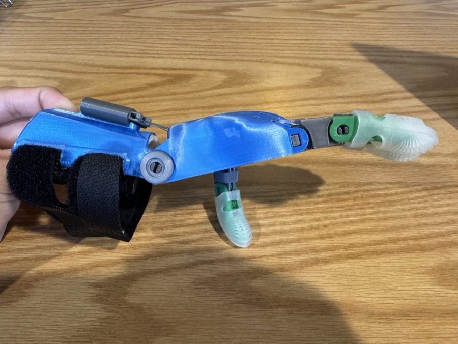
Wrist hinge and tension block
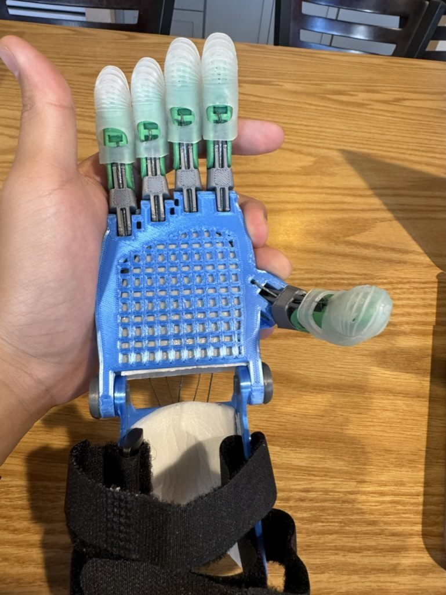
Palm view, to scale
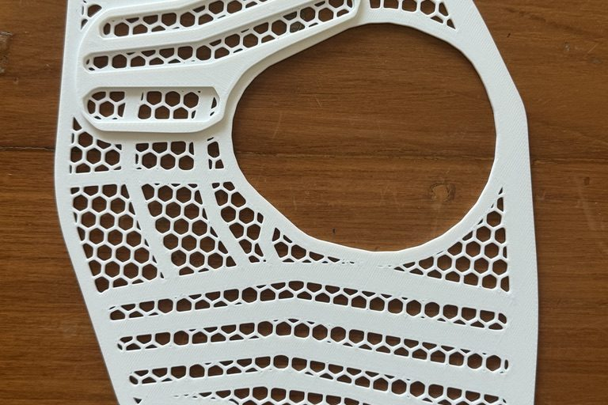
▸ 13
Medical aid · Donation
Printed splints for donation
Through my 3D Printing Club, I printed a set of Adapt3D splints for donation. They print flat as a honeycomb lattice, then a clinician heats and shapes them to the patient's arm, so one printer can make fitted splints without a cast room.
3D Printing Club, Northfield Mount Hermon · 2024
Medical printingThermoformable designDonation
More photos
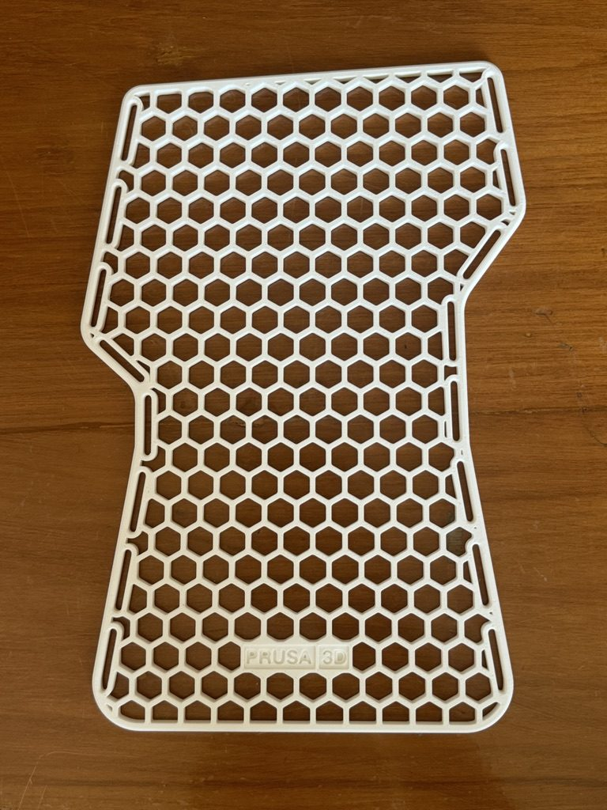
Hand splint, printed flat
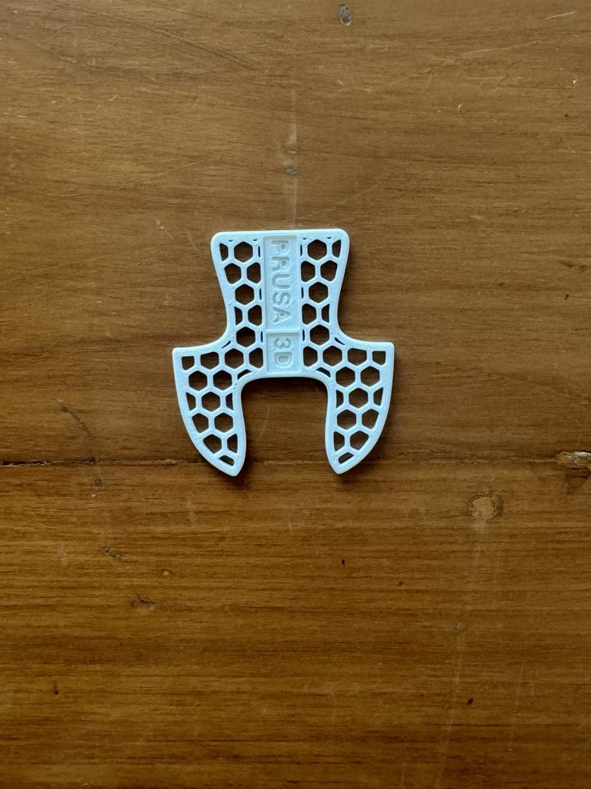
Thumb piece
Builds & repairs
Hands-on, outside class
▸ 6×17
Boston from Fenway: one single exposure on the 6×17 camera below. Nothing is stitched.
What a 6×17 frame is
A film camera has no sensor. Light from the lens falls on a strip of film coated with light-sensitive silver halide crystals, and the picture appears when the film is chemically developed. The larger the piece of film, the more detail each picture holds.
A 6×17 camera uses 120 roll film and exposes a single frame 6 cm tall and 17 cm wide, about 12 times the area of a standard 35mm frame. A whole roll gives just four pictures, so every frame has to count.
▸ 08
Optics · 3D printing
6×17 panoramic film camera
Commercial 6×17 cameras are specialist gear. Mine is 3D-printed: I started from an open-source body and redesigned the lens cone around a Schneider Super Angulon 90mm f/8, a lens made for large-format cameras whose image circle is wide enough to cover a 17 cm frame.
The hard part is precision. The lens has to sit at exactly the right distance from the film for the whole width to be sharp, and the body has to be completely light-tight. I iterated through several print revisions, measuring and adjusting the flange distance each time, until the frames came back sharp edge to edge.
Film cameras keep stray light out with thin foam seals around the back door and film channels. After decades the foam breaks down into sticky crumbs, light gets in, and it fogs the film with streaks and blotches like the ones below. I keep both cameras in working order so they are ready to shoot whenever I need them.
To find each leak, I ran a controlled test: I closed everything up, left the lens cap on, exposed blank frames in bright light and developed them. Any light on that film had to come through a gap rather than the lens, and where the fogging landed on the frame showed which seal had failed. I scraped out the degraded foam, cleaned the channels of old adhesive, fitted precision pre-cut replacement seals, then shot full rolls to confirm the fix. It is the same loop I want to use on medical devices: reproduce the failure, isolate the cause, fix it and verify.
▸ F2
Nikon F2 (35mm, 1970s). Before: leaked light printed a row of blotches across the sky.
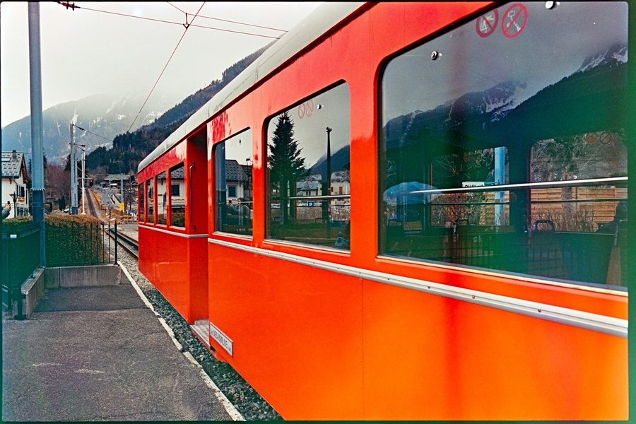
Before: fog creeping in from the edges
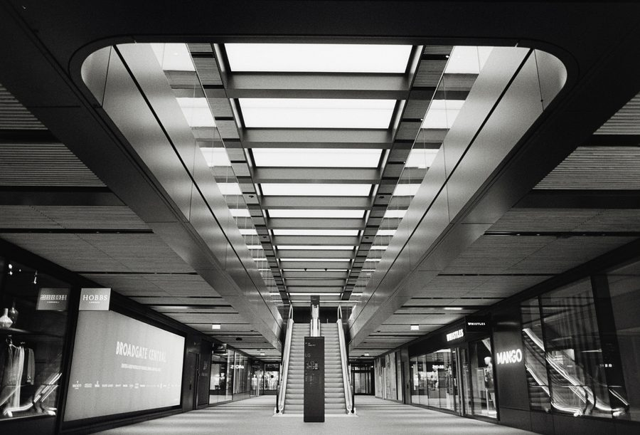
After: clean black-and-white frame, London
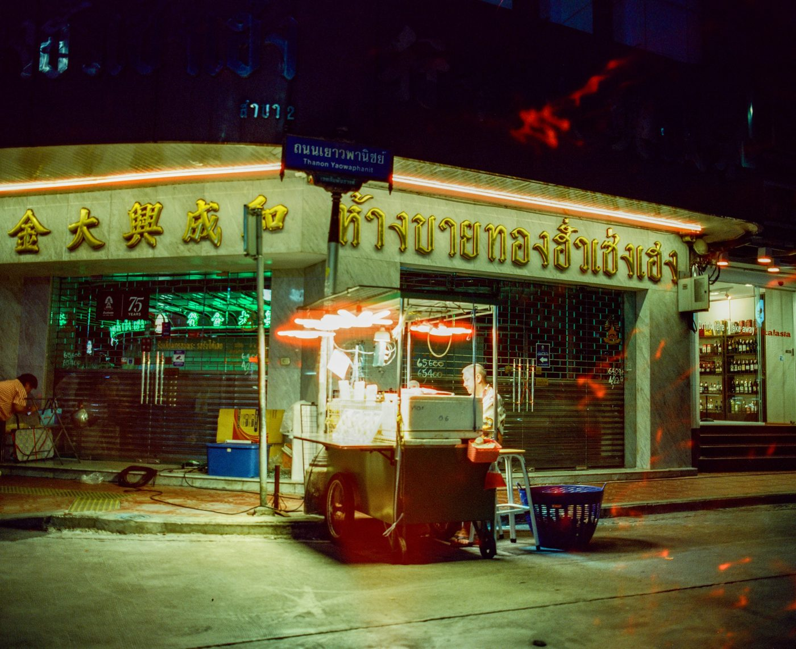
▸ RB67
Mamiya RB67 (6×7 medium format). Before: red streaks on Yaowarat Road, Bangkok.
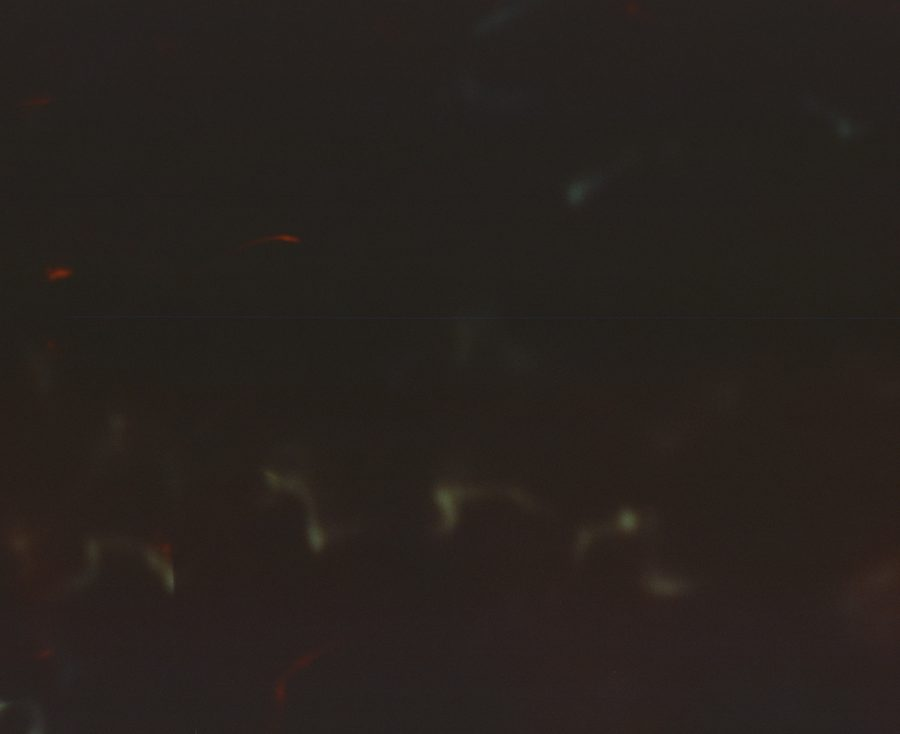
Lens-cap test: should be pure black
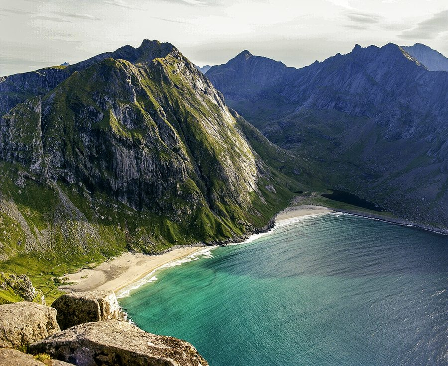
After: clean frame, Lofoten, Norway
▸ 09
Electromechanical · Repair
AIWA AD-S37 cassette deck restoration
A 1990s deck with Dolby B/C and HX Pro that would no longer play. The rubber drive belts had degraded and broken. I took apart the tape transport, removed the capstan motor and flywheel, cleaned the melted rubber residue from the pulleys and capstan, routed new belts along the motor–flywheel–reel path, and put it all back together. It plays again.
Personal repair · 2026
DisassemblyBelt driveMechanism repair
Repair photos
Old belts, stretched and stickyTransport out, flywheel removed
▸ 14
Design for manufacture · NMH
Cup racks for the NMH dining hall
The dining hall stored its cups loose in brass bowls, so they toppled and piled up. I offered to fix it: I measured the cups with calipers, designed a holder in CAD that grips their tapered shape, then printed it in batches and glued the holders onto cut acrylic bases to make racks.
It ran as a 3D Printing Club initiative with the NMH makerspace, and the racks stayed in daily use through my graduation. I handed the CAD files to Jamie Rourke, who runs the makerspace, so the makerspace can print more.